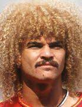

Curriculum Vitae de Carlos Valederrama
Datos personales

- Nombre completo: Carlos Alberto Valderrama Palacio
- Fecha de nacimiento: 25/2/1976
- Lugar de nacimiento: Santa Marta - Atlántico
Formación académica
- 2005-2009: Universidad del Espantapájaros
- 2003-2004: Instituto de Dos Caras
- 1997-2002: Escuela Primaria del Joker
Experiencia laboral
- 2010-2015: En el paro
- 2016-2019: Cazavillanos y demás chusma
- 2020-2021: Aprendiz de superhéroe